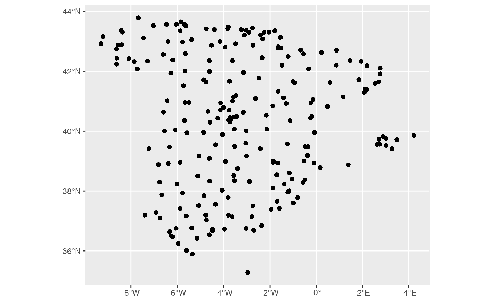
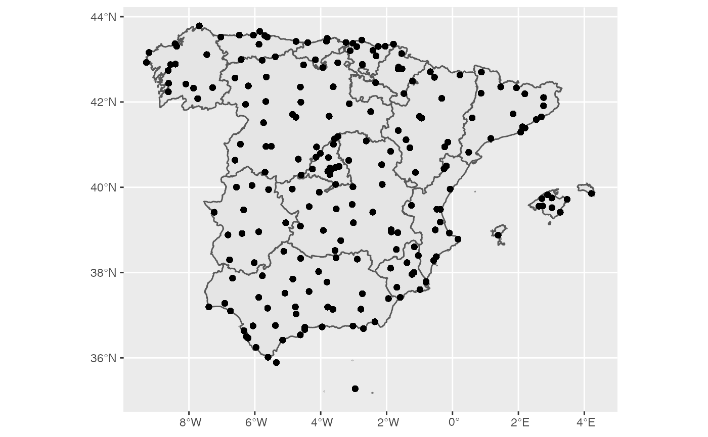
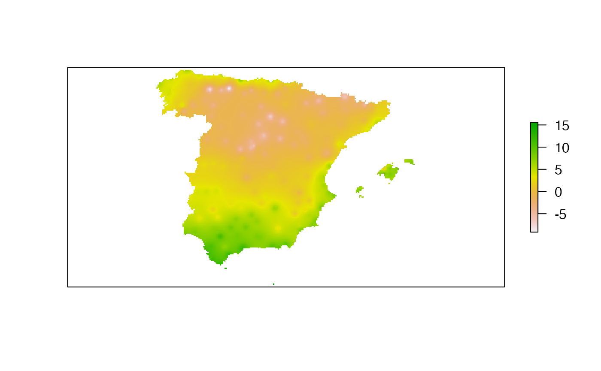
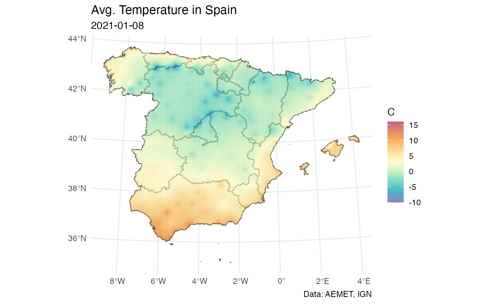

Spatial Interpolation with climaemet
Source:vignettes/articles/Spatial-Interpolation-with-climaemet.Rmd
Spatial-Interpolation-with-climaemet.Rmdclimaemet can retrieve data from the stations included on AEMET Open Data. However, in terms of spatial analysis and visualization, it can be useful to extend the data from points (stations) to the whole extent of Spain. On this article we would explain a method to interpolate the climatic data trough Spatial Interpolation, that is the process of using points with known values to estimate values at other unknown points.
Retrieving data
We choose here the daily climatic data from the last winter in Spain. Note that on the first half of January, Storm Filomena brought unusual heavy snowfall to parts of Spain, with Madrid recording its heaviest snowfall since 1971. We should be able to spot that.
clim_data <- aemet_daily_clim(start = "2020-12-21",
end = "2021-03-20",
return_sf = TRUE)
clim_data_clean <- clim_data %>%
# Exclude Canary Islands from analysis
filter(!provincia %in% c("LAS PALMAS", "STA. CRUZ DE TENERIFE")) %>%
select(fecha, tmed) %>%
# Exclude NAs
filter(!is.na(tmed))
summary(clim_data_clean$tmed)
#> Min. 1st Qu. Median Mean 3rd Qu. Max.
#> -15.200 6.100 9.500 8.874 12.200 25.000
ggplot(clim_data_clean) +
geom_sf()
We load also a basic shapefile of Spain using mapSpain:
CCAA <- esp_get_ccaa(epsg = 4326) %>%
# Exclude Canary Islands from analysis
filter(ine.ccaa.name != "Canarias")
ggplot(CCAA) +
geom_sf() +
geom_sf(data = clim_data_clean)
As it can be seed, the climatic data we have available so far is restricted to the stations (points), but we want to extend these values to the whole territory.
Interpolating the data
As we need to predict values at locations where no measurements have been made, we would need to interpolate the data. On this example we would apply the Inverse Distance Weighted method, that is one of several approaches to perform spatial interpolation. We recommend this article on how to perform these analysis on R.
The process would be as follow:
- Create an spatial object (grid) where the predicted values would be applied.
- Perform an spatial interpolation.
- Visualize the results.
Creating a grid
For this analysis, we need a destination object with the locations to be predicted. A common technique is to create a spatial grid (a “raster”) covering the targeted locations.
On this example, we would use sf to create a regular grid that would be converted into a raster.
An important thing to consider in any spatial analysis or visualization is the coordinate reference system (CRS). We won’t cover this in detail on this article, but we should mention a few key considerations:
- When using several spatial objects, we should ensure that all of them present the same CRS. This can be achieved projecting the objects (i.e. transforming their coordinates) to the same CRS.
- Longitude/latitude coordinates are unprojected coordinates. When we project an object (i.e. Mercator projection) we actually change the values of every point (x,y) coordinates (i.e. a projection is a transformation of the coordinates.)
- For measuring distance in meters, etc. we should choose the right projection. Distances on unprojected coordinates are meaningless. Think that 1 degree of longitude on the equator means 111 kms but on the North Pole means roughly 0.11 m. The degrees just split a circumference on equally spaced buckets, but the Earth is an spheroid and the circumferences at different latitudes doesn’t have the same length (opposed to a cylinder, where circumferences are the same at any latitude or y-axis.)
On this exercise, we choose to project our objects to ETRS89 / UTM zone 30N EPSG:25830, that provides x and y values on meters and maximizes the accuracy for Spain.
clim_data_utm <- st_transform(clim_data_clean, 25830)
CCAA_utm <- st_transform(CCAA, 25830)
# Note the original projection
st_crs(CCAA)$proj4string
#> [1] "+proj=longlat +datum=WGS84 +no_defs"
# vs the utm projection
st_crs(CCAA_utm)$proj4string
#> [1] "+proj=utm +zone=30 +ellps=GRS80 +towgs84=0,0,0,0,0,0,0 +units=m +no_defs"Now, we create a regular grid using sf. This grid is composed to equally spaced points over the whole extent (bounding box) of Spain.
We use here a density of 5000 (m), so the grid density is 5 x 5 kms (25 km2):
Interpolating the data
Now we just need to populate the (empty) grid with the predicted values based on the observations:
# Test with a single day
test_day <- clim_data_utm %>% filter(fecha == "2021-01-08")
# Interpolate temp
interp_temp <- gstat::idw(tmed ~ 1,
# Formula interpolation
as(test_day, "Spatial"),
# Origin
newdata = grd,
# Destination
idp = 2.0)
#> [inverse distance weighted interpolation]
# To raster and mask the grid to the shape of Spain
interp_temp <- raster(interp_temp) %>%
mask(CCAA_utm)
plot(interp_temp, axes=FALSE)
Let’s create a nice ggplot2 plot!
# Making a nice plot on ggplot2
temp_values <- as.data.frame(interp_temp, xy = TRUE, na.rm = TRUE)
names(temp_values) <- c("x", "y", "temp")
# Rounding function
mround <- function(x, base) {
base * round(x / base)
}
# To nearest 2.5 multiple
temp_values$round <- mround(temp_values$temp, 2.5)
# Labs legend
temp_values$cat <- factor(temp_values$round)
ncats <- length(unique(temp_values$cat))
ggplot() +
geom_sf(data = CCAA_utm, fill = "grey95") +
geom_tile(data = temp_values, aes(x = x, y = y, fill = cat)) +
scale_fill_manual(
values = hcl.colors(ncats, "PuBu", alpha = 0.85, rev = TRUE),
guide = guide_legend(reverse = TRUE)
) +
theme_minimal() +
ylab(NULL) +
xlab(NULL) +
labs(
title = "Avg. Temperature in Spain",
subtitle = "2021-01-08",
caption = "Data: AEMET, IGN",
fill = "C"
)
Animation
On this section, we would loop over the dates to create a final animation to observe the evolution of Filomena in Spain
# Extending and animating
dates <- sort(unique(clim_data_clean$fecha))
# Loop through days and interpolate
interp_res <- NULL
for (i in seq_len(length(dates))) {
thisdate <- dates[i]
tmp_day <- clim_data_utm %>% filter(fecha == thisdate)
interp_day <-
gstat::idw(tmed ~ 1,
as(tmp_day, "Spatial"),
newdata = grd,
idp = 2.0)
interp_day <- raster(interp_day) %>% mask(CCAA_utm)
interp_day <- as.data.frame(interp_day, xy = TRUE, na.rm = TRUE)
names(interp_day) <- c("x", "y", "temp")
interp_day$fecha <- thisdate
interp_res <- dplyr::bind_rows(interp_res,interp_day)
}
# To nearest 2.5 multiple
interp_res$round <- mround(interp_res$temp, 2.5)
# Labs legend
interp_res$cat <- factor(interp_res$round)
ncats_res <- length(unique(interp_res$cat))Now we loop trough the interpolated results again to create the animation:
# Extending and animating
dates <- sort(unique(clim_data_clean$fecha))
# File array
files <- paste0("frame_",dates,".png")
file_array <- file.path(tempdir(), files)
for (j in seq_len(length(dates))) {
today <- dates[j]
temp_values <- interp_res[interp_res$fecha == today, ]
gg <- ggplot(temp_values) +
geom_tile(data = temp_values, aes(x = x, y = y, fill = cat)) +
geom_sf(data = CCAA_utm, fill="transparent") +
coord_sf(expand = FALSE) +
scale_fill_manual(
values = hcl.colors(ncats_res, "RdBu", alpha = 0.85, rev = TRUE),
guide = guide_legend(reverse = TRUE),
drop = FALSE
) +
theme_minimal() +
ylab(NULL) +
xlab(NULL) +
labs(
title = "Avg. Temperature in Spain",
subtitle = today,
caption = "Data: AEMET, IGN",
fill = "C"
)
ggsave(file_array[j], plot=gg, width = 8.28, height = 7.33)
}
# Create animation
tempgif <- "winter_2021.gif"
gifski(file_array, tempgif, width = 800, height = 700, loop = TRUE)
# From cache
knitr::include_graphics("winter_2021.gif")
Session Info
Details
#> R version 4.0.5 (2021-03-31)
#> Platform: x86_64-apple-darwin17.0 (64-bit)
#> Running under: macOS Catalina 10.15.7
#>
#> Matrix products: default
#> BLAS: /Library/Frameworks/R.framework/Versions/4.0/Resources/lib/libRblas.dylib
#> LAPACK: /Library/Frameworks/R.framework/Versions/4.0/Resources/lib/libRlapack.dylib
#>
#> locale:
#> [1] en_US.UTF-8/en_US.UTF-8/en_US.UTF-8/C/en_US.UTF-8/en_US.UTF-8
#>
#> attached base packages:
#> [1] stats graphics grDevices utils datasets methods base
#>
#> other attached packages:
#> [1] gifski_1.4.3 ggplot2_3.3.3 dplyr_1.0.5
#> [4] gstat_2.0-7 raster_3.4-5 sp_1.4-5
#> [7] sf_0.9-8 mapSpain_0.2.1 climaemet_1.0.0.9000
#>
#> loaded via a namespace (and not attached):
#> [1] Rcpp_1.0.6 lubridate_1.7.10 lattice_0.20-41 FNN_1.1.3
#> [5] class_7.3-18 zoo_1.8-9 rprojroot_2.0.2 digest_0.6.27
#> [9] utf8_1.2.1 R6_2.5.0 evaluate_0.14 e1071_1.7-6
#> [13] highr_0.8 httr_1.4.2 pillar_1.5.1 rlang_0.4.10
#> [17] curl_4.3 rmarkdown_2.7 pkgdown_1.6.1 textshaping_0.3.3
#> [21] desc_1.3.0 readr_1.4.0 stringr_1.4.0 munsell_0.5.0
#> [25] proxy_0.4-25 compiler_4.0.5 xfun_0.22 pkgconfig_2.0.3
#> [29] systemfonts_1.0.1 htmltools_0.5.1.1 tidyselect_1.1.0 tibble_3.1.0
#> [33] intervals_0.15.2 codetools_0.2-18 fansi_0.4.2 spacetime_1.2-4
#> [37] crayon_1.4.1 withr_2.4.1 grid_4.0.5 jsonlite_1.7.2
#> [41] gtable_0.3.0 lifecycle_1.0.0 DBI_1.1.1 magrittr_2.0.1
#> [45] units_0.7-1 scales_1.1.1 KernSmooth_2.23-18 stringi_1.5.3
#> [49] cachem_1.0.4 farver_2.1.0 fs_1.5.0 ellipsis_0.3.1
#> [53] xts_0.12.1 ragg_1.1.2 generics_0.1.0 vctrs_0.3.7
#> [57] tools_4.0.5 glue_1.4.2 purrr_0.3.4 hms_1.0.0
#> [61] fastmap_1.1.0 yaml_2.2.1 colorspace_2.0-0 classInt_0.4-3
#> [65] memoise_2.0.0 knitr_1.31Site built with pkgdown 1.6.1.
Template by Bootstrapious . Ported to pkgdown by dieghernan.